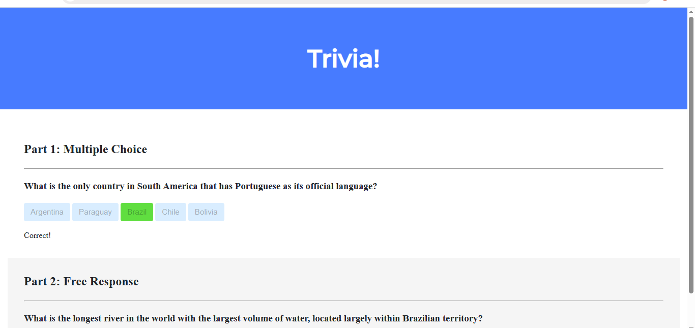
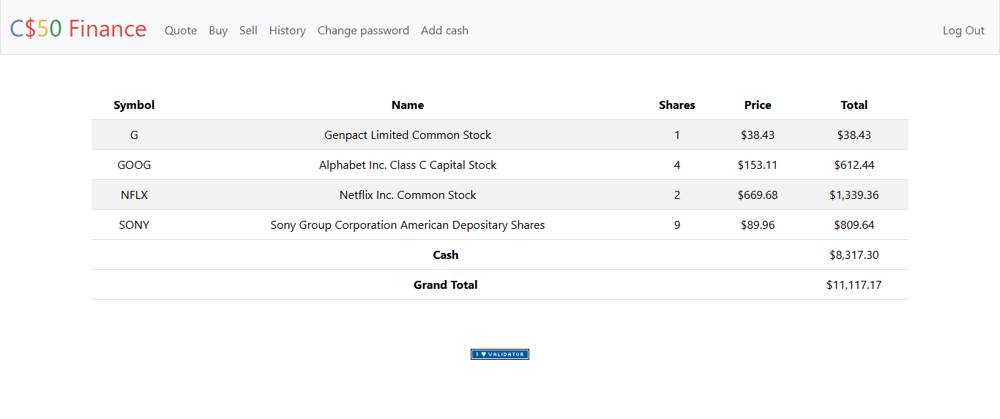

My Projects
Here are some of the projects I have developed during my learning journey. Each project has helped me improve my programming skills and gain practical experience in software development.

CS50 Trivia
An interactive web application developed using HTML, CSS, and JavaScript. The project features multiple-choice and free-response questions with instant feedback, demonstrating DOM manipulation, event handling, and responsive web design. It was one of my first experiences creating a fully interactive website.
Technologies:
DNA Identification
A Python application that identifies individuals by analyzing DNA sequences. The program compares Short Tandem Repeats (STRs) from a DNA sample against a database to find the correct match. Through this project, I improved my knowledge of algorithms, string manipulation, file handling, and data analysis
Technologies:

Finance
A full-stack web application built with Flask that simulates a stock trading platform. Users can buy and sell stocks, manage their portfolios, and view transaction history. This project helped me learn backend development, authentication, SQL databases, and web application design.
Technologies:
Image Filters
An image processing application written in C capable of applying grayscale, sepia, reflection, blur, and edge detection filters to bitmap images. Through this project, I gained practical experience with pointers, multidimensional arrays, memory manipulation, and algorithm implementation while working directly with image data.
Technologies:
Future Projects
This portfolio is constantly growing. I am always working on new ideas, learning new technologies, and developing projects that challenge my skills. Stay tuned for future updates!